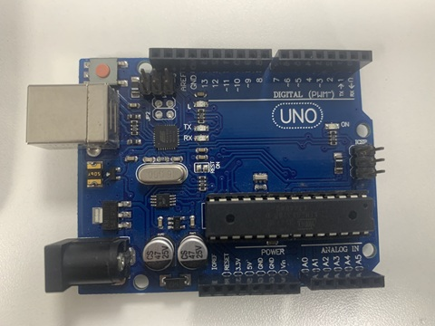
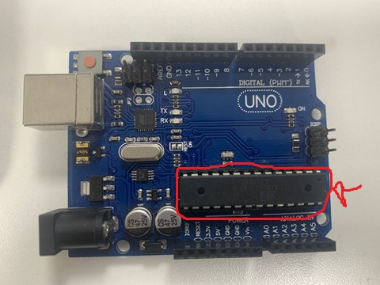
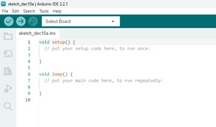

Arduíno
Arduino é uma placa de circuito impresso que possibilita o desenvolvimento de projetos eletrônicos.Um exemplo de Arduino é o Arduino UNO, que possui pinos para conexão de sensores,motores e LEDs

Microcontrolador
O microcontrolador do arduino é um chip que opera como um computador em miniatura. Ele tem pinos de entrada e saída que servem para conectar sensores, LEDs ou motores.
Ele é programado em C++ e pode executar tarefas simples como acender luzes ou medir temperatura.
Modelo: ATMEGA 328P Fabricante: ATMEL

Linguagem de Programação
O Arduino utiliza a linguagem baseada no C++. Ela foi criada para facilitar o controle de placas microcontroladoras, permitindo que até quem não é expert em programação consiga criar projetos com sensores, motores e LEDs. Você escreve o código em um ambiente de desenvolvimento integrado (IDE) gratuito. É compilada e enviada para a placa via USB.
Arduino IDE
O Arduino IDE (do inglês, Integrated Development Environ- ment), é uma ferramenta gratuita onde nós programamos o arduino. Nós temos um botão para compilar e outro para enviar o código para o microcontrolador via USB e conferimos os dados no monitor serial
